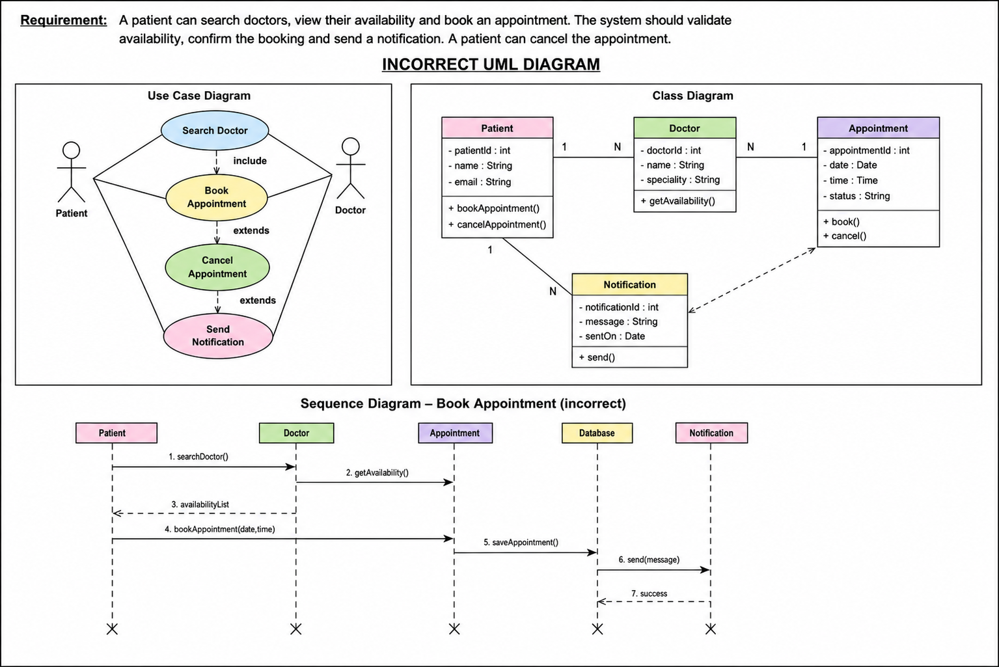
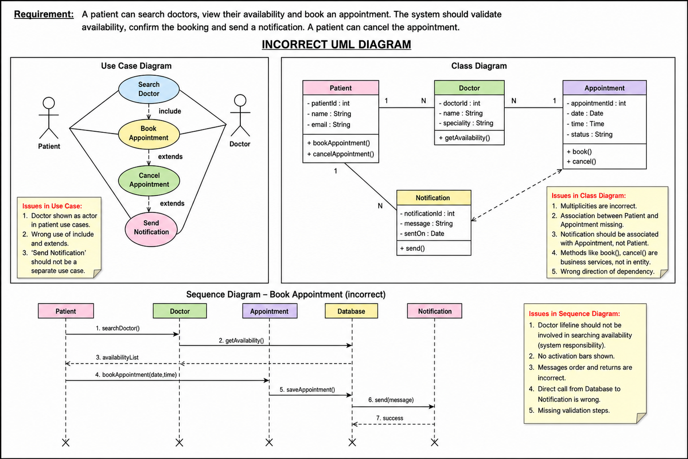

**AI Product Owner Scenarios — Questions 1–10
1. Project / Product Understanding
[[Q]]Business asks: “We need a dashboard showing customer profitability.” Engineering asks you for requirements. How do you proceed?[[/Q]]
Strong answer: Clarify business outcome → personas → source systems → calculation definition → refresh frequency → security → NFRs → acceptance criteria → dependencies. Do not jump directly to a solution or dashboard fields.
2. Product Ownership
[[Q]]You have 25 backlog items but capacity for only 10. Sales wants revenue features, Operations wants reconciliation fixes, Compliance wants mandatory controls. How will you prioritize?[[/Q]]
Strong answer: Use value + regulatory urgency + risk + dependency + effort. Put compliance/non-negotiable items first where appropriate, then business value. RICE, WSJF or MoSCoW may help, but practical reasoning matters more than naming a framework.
3. Requirements Analysis
[[Q]]Business says: “Customer records should be accurate.” Write this as a usable user story and acceptance criteria.[[/Q]]
Strong answer: Convert the vague statement into a measurable requirement—for example, duplicate identification, mandatory fields, source precedence and validation thresholds—with GIVEN/WHEN/THEN acceptance criteria.
4. Requirements Gap
[[Q]]Requirement says: “Load customer data daily from System A into platform B.” What questions are missing?[[/Q]]
Strong answer: Volume, timing, incremental/full load, key/identifier, transformations, duplicate handling, delete handling, failures/retry, SLA, reconciliation, security and source of truth.
5. Data Analysis
[[Q]]Source has 1,000,000 customer records. Target has 997,500. How would you investigate?[[/Q]]
Strong answer: Quantify the missing 2,500. Compare counts by batch/date/status, rejected records, duplicate/merge rules, transformation filters, null keys, failed interfaces and source-to-target reconciliation.
6. Data Lineage
[[Q]]A field called Customer Segment is wrong in a report. How do you trace the issue?[[/Q]]
Strong answer: Trace report → semantic/reporting layer → target DB/object → transformation → staging → source field → originating system. Identify where the value changed and the owner at each stage.
7. Source-to-Target Mapping
[[Q]]Source has First Name, Last Name and DOB. Target needs CustomerName, AgeBand and CustomerKey. What should a mapping document contain?[[/Q]]
Strong answer: Source field, target field, datatype, transformation logic, default/null treatment, lookup/reference rules, validation, example and ownership. Define CustomerKey explicitly.
8. Reconciliation
[[Q]]Record counts match between source and target. Can you sign off migration?[[/Q]]
Strong answer: No. Count reconciliation alone is insufficient. Check control totals, key-field values, aggregates, duplicate counts, rejected records, referential integrity and business-rule reconciliation.
9. Data Quality
[[Q]]20% of customer emails are blank, 4% duplicates, and 2% of DOB values are invalid. What do you do first?[[/Q]]
Strong answer: Assess business impact/criticality → identify source/owner → define DQ thresholds → determine prevention vs cleansing → prioritize duplicate/invalid data based on downstream impact → monitor the metric.
10. Data Governance
[[Q]]Business and IT disagree on who owns Customer Status. Who decides its definition?[[/Q]]
Strong answer: The business data owner/steward owns the business meaning; IT implements controls. Establish a glossary, authoritative source, ownership, validation rule and change governance.**AI Product Owner Scenarios — Questions 11–20
11. Prioritization
[[Q]]Feature A gives ₹5 Cr benefit but depends on unfinished data migration. Feature B gives ₹1 Cr and is ready. Which do you deliver?[[/Q]]
Strong answer: Do not blindly choose A. Consider dependency readiness, time-to-value, risk and capacity. Often deliver B while removing A’s blocker; roadmap both.
12. Dependency Management
[[Q]]Your feature is ready but depends on another team’s API, which slips by two sprints. What do you do?[[/Q]]
Strong answer: Assess the critical path → mock/stub the API → decouple development → escalate the dependency → re-sequence scope → update the roadmap → communicate business impact.
13. Troubleshooting
[[Q]]Business says the source shows £10M sales but the target dashboard shows £9.6M. How will you debug?[[/Q]]
Strong answer: Reproduce → identify scope/time period → compare transaction counts → check filters → currency conversion → rejected records → transformations → duplicate elimination → aggregation logic → reconciliation evidence.
14. UAT Validation
[[Q]]Business says “UAT passed because users tested the screens.” Is that sufficient?[[/Q]]
Strong answer: No. UAT must validate business scenarios + acceptance criteria + end-to-end data + negative cases + reconciliation + defects + sign-off.
15. UAT Defect
[[Q]]During UAT, 500 migrated customers have incorrect status. Developer says code works as designed. Is this a defect?[[/Q]]
Strong answer: Compare against the approved requirement/mapping. It could be a requirement defect, mapping defect, data defect or code defect. Determine the root cause before assigning ownership.
16. Product Strategy
[[Q]]Business asks for 10 custom features that the platform already provides differently out of the box. What would you recommend?[[/Q]]
Strong answer: Challenge customization. Compare business value with platform capability; prefer configuration/adoption where possible; assess long-term TCO, upgradeability, UX and genuine differentiators.
17. Product Strategy
[[Q]]Leadership wants a feature because a competitor has it. What do you do?[[/Q]]
Strong answer: Validate the customer problem, expected outcome, usage/value hypothesis, strategic alignment, evidence and opportunity cost. A competitor feature alone is not justification.
18. Data Leadership
[[Q]]Three systems each claim to be the source of truth for customer address. How would you resolve it?[[/Q]]
Strong answer: Define the system of record by attribute/business process, ownership, survivorship rules, timestamp/reliability hierarchy, golden record/mastering and governance.
19. Communication
[[Q]]Engineering says the requirement is impossible; business says it is mandatory. How do you handle the meeting?[[/Q]]
Strong answer: Separate the requirement from the proposed solution → understand the constraint → restate the business outcome → explore alternatives/trade-offs → quantify impact → document the decision.
20. Lead / Mentorship
[[Q]]A junior BA has written 40 stories with unclear acceptance criteria two days before refinement. What would you do?[[/Q]]
Strong answer: Do not rewrite everything personally. Prioritize critical stories, coach with examples/template, pair-review, define a Definition of Ready/checklist, identify recurring gaps and improve the quality process.
